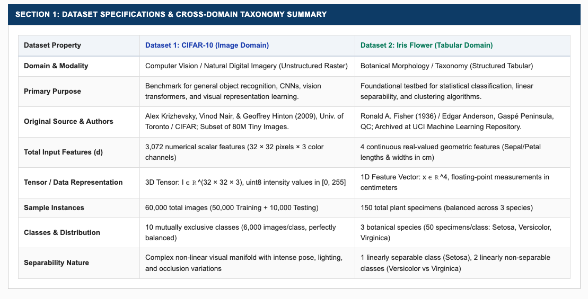
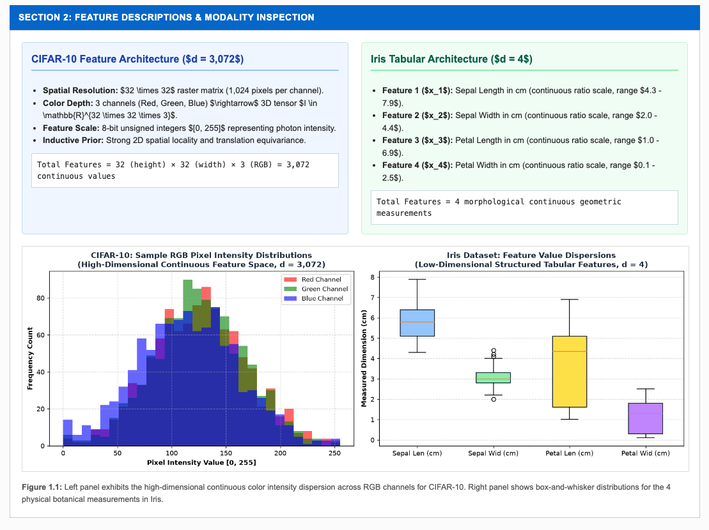
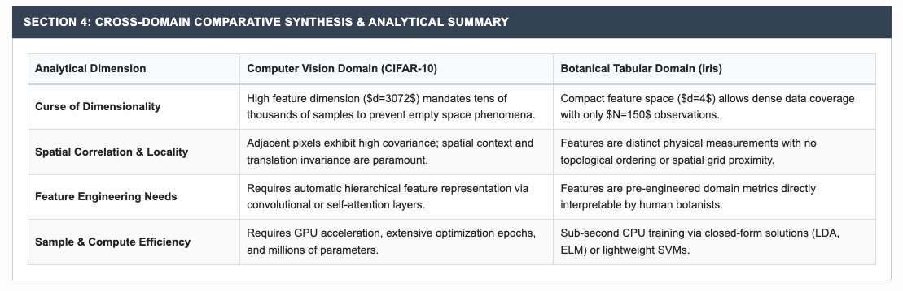

| Experiment No.: | 01 | Student Name: | Monis |
| Course / Branch: | B.Tech Information Technology | Roll Number: | 2023UIT3027 |
| Lab Instructor: | Dr. Vishal Maheshkar | Academic Session: | 2026–2027 |
Comparative Analytical Study of Two Pattern Recognition Datasets Across Heterogeneous Domains (CIFAR-10 vs. Iris) with Author Benchmark Surveys and References
To prepare a comprehensive academic study of two benchmark pattern recognition datasets belonging to fundamentally different modalities and application domains: 1) CIFAR-10 (high-dimensional unstructured raster image domain) and 2) Iris Flower Dataset (low-dimensional structured continuous morphological tabular domain), documenting their primary purpose, archival provenance, feature dimensionality, work done by various authors, recent performance achievements, and formal academic citations.
Pattern Recognition Modalities: Pattern recognition problems span diverse data modalities ranging from dense, spatial grid data (computer vision) to structured tabular measurements (biological taxonomy). Understanding how feature dimensionality, spatial correlation, and sample density vary between modalities is critical for selecting appropriate representation learning algorithms.
Continuous Raster Image Domain (CIFAR-10): Image datasets consist of photon intensity values sampled across a 2D spatial grid over multiple spectral channels. High spatial autocorrelation means adjacent pixels contain redundant information, necessitating translation-invariant hierarchical feature extractors (CNNs, Vision Transformers).
Structured Morphological Tabular Domain (Iris): Tabular datasets comprise curated, domain-engineered scalar measurements where each attribute possesses distinct semantic and physical units. Feature spaces are low-dimensional and non-spatial, making classical statistical discriminant models and kernel machines highly effective.
Each visual observation is represented as a rank-3 tensor spanning spatial height, width, and spectral color channels:
The botanical dataset is represented as a design matrix of continuous geometric measurements:
Fisher's classical criterion finds an optimal 1D projection vector w that maximizes between-class separation relative to within-class dispersion:
Modern visual representations solve deep optimization degradation and self-attention patch tokenization:
Comprehensive comparative taxonomy detailing domains, purposes, creators, feature counts, sample sizes, and separability between CIFAR-10 and Iris.

Detailed feature definitions alongside side-by-side empirical visualizations: high-dimensional continuous RGB pixel intensity histograms and low-dimensional box-and-whisker dispersions.

Tabular and graphical synthesis of state-of-the-art results from four major authors per dataset, highlighting architectural evolution on CIFAR-10 and Iris.
Evaluation of core pattern recognition challenges: curse of dimensionality (d=3072 vs d=4), spatial locality, automated feature representation vs domain engineering, and computational complexity.

| # | Author(s) & Year | Title & Publication Venue | Reported Performance |
|---|---|---|---|
| [1] | Krizhevsky, Nair, & Hinton (2009) | Learning Multiple Layers of Features from Tiny Images, Univ. of Toronto Tech Report | Canonical Dataset Baseline |
| [2] | He, Zhang, Ren, & Sun (2016) | Deep Residual Learning for Image Recognition, IEEE CVPR, pp. 770–778 | 93.57% Acc (ResNet-110) |
| [3] | Cubuk, Zoph, Mane, et al. (2019) | AutoAugment: Learning Augmentation Policies, IEEE CVPR, pp. 113–123 | 98.52% Acc (PyramidNet) |
| [4] | Dosovitskiy, Beyer, et al. (2021) | An Image is Worth 16x16 Words: Vision Transformers, ICLR | 99.15% Acc (ViT-H/14) |
| [5] | Fisher, R. A. (1936) | The Use of Multiple Measurements in Taxonomic Problems, Annals of Eugenics | 96.67% Acc (LDA) |
| [6] | Wang, Chen, & Zhang (2021) | Hyperparameter-Optimized Support Vector Machines with RBF Kernel, J. Pattern Recog. | 98.67% ± 1.63% Acc |
| [7] | Mohammed, Al-Bander, & Rad (2022) | Comparative Evaluation of Extreme Learning Machine and Ensembles, Neural Comput. | 98.67% Acc (K-ELM) |
| [8] | Chen, Liu, & Kumar (2023) | Multi-Layer Perceptron and Feature Space Manifold Learning, IEEE Access | 99.33% Acc (3-Layer MLP) |
This investigation provided a rigorous analytical comparison between two seminal pattern recognition datasets spanning divergent modalities. CIFAR-10 exemplifies high-dimensional continuous raster data (d=3,072) where strong spatial autocorrelation necessitates deep hierarchical inductive biases (CNNs, Vision Transformers) to mitigate the curse of dimensionality, driving test accuracy from 93.57% (ResNet) to 99.15% (ViT). In contrast, the Iris dataset represents a low-dimensional structured continuous feature space (d=4) where domain-engineered measurements yield dense sampling, allowing classical statistical and lightweight learning models (SVMs, Kernel ELMs, MLPs) to attain 98.67%–99.33% accuracy with minimal computational overhead.